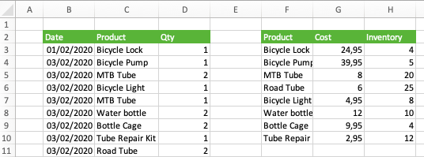

── Attaching packages ─────────────────────────────────────── tidyverse 1.3.2 ──
✔ ggplot2 3.4.0 ✔ purrr 0.3.4
✔ tibble 3.1.8 ✔ dplyr 1.0.10
✔ tidyr 1.2.0 ✔ stringr 1.5.0
✔ readr 2.1.2 ✔ forcats 0.5.2
── Conflicts ────────────────────────────────────────── tidyverse_conflicts() ──
✖ dplyr::filter() masks stats::filter()
✖ dplyr::lag() masks stats::lag()6 Cleaning and importing Assesment: Intent 02
6.1 List all of the sheets of the character_excel excel workbook.
Complete the code to return the output
library(readxl)
excel_sheets(character_excel)Expected Output
[1] "iris" "mtcars" "chickwts" "quakes"
## Some mistakes were made during data entry of plant inventory for
Green Friend Nursery. Remove the leading spaces from all entries in the
`water_requirement` column of the `plants` data.7 A tibble: 5 x 3
name binomial_name water_requirement
1 Alfredo Monstera Deliciosa moderate
2 Isabella Calathea Orbifolia moderate
3 Marty Areca high
4 Ollie Alocasia Zebrina high
5 Howerd Kentiapalm moderate
**Complete the code to return the output**
```{.r}
library(stringr)
library(dplyr)
plants %>%
mutate(water_requirement = str_trim(water_requirement))7.1 Consider the fictional character data previewed below.
Split the data into Name, Street, City and Country columns so that it would be possible to determine how many characters are from each country.
# A tibble: 3 x 1
Address
<chr>
1 Sherlock Holmes,221B Baker Street,London,England
2 Harry Potter,4 Private Drive,Surry,England
3 Bruce Wayne,1007 Mountain Drive,Gotham,United StatesComplete the code to return the output
7.2 Before each of the strings in the vector x,
add underscores (_) so they are all a width of 4 characters. Complete the code to return the output
Expected Output
[1] "___A" "__BC" "_DEF"7.3 Below is a preview of the candy_reviews data. Remove all rows that
contain a missing value, in any column
# A tibble: 4 x 3
reviewer candy rating
<chr> <chr> <dbl>
1 a M&Ms 9
2 a NA 5
3 b M&Ms NA
4 b Skittles 3
Complete the code to return the output
Expected Output
# A tibble: 2 × 3
reviewer candy rating
<chr> <chr> <dbl>
1 a M&Ms 9
2 b Skittles 37.4 Import the first sheet, titled “iris” of the
character_excel excel spreadsheet.
Complete the code to return the output
library(readxl)
read_excel(character_excel, sheet = 1)7.5 All information relating to participants in a trial is contained in
the data subjects, previewed below. Combine the country_code and number columns to create a column (full_number) containing the entire phone number.
surname_initial age country_code number
1 Smith J 24 504 12345
2 Williams F 52 852 987654
3 Taylor K 14 44 13579
4 Jones D 78 27 24680Complete the code to return the output
7.6 Given the following data, yearly_price, replace all missing values
in the value column with the last non-missing value.
# A tibble: 5 x 2
year value
<int> <dbl>
1 2015 3
2 2016 3.5
3 2017 NA
4 2018 NA
5 2019 7 Complete the code to return the output
7.7 The sales data, previewed below contains a number of missing values.
For your analysis it is sufficient to replace missing values with the previous observation. Update the data to replace the missing values in the items_sold column.
# A tibble: 6 x 2
date items_sold
<chr> <dbl>
1 2019-10-06 26
2 2019-10-15 12
3 2019-10-24 82
4 2019-10-30 NA
5 2019-11-05 101
6 2019-11-18 18
Complete the code to return the output
7.8 The 2Weels Bicycle Shop stores their sales data and inventory in one
Excel sheet. Import the inventory data located in the table starting at cell F2. 
Complete the code to return the output
7.9 The photo.csv file contains data on photos and the details of the camera
settings. Import the first 4 rows of the file. The file path as been stored in photo_file.
photo_id,camera,aperture,focal_length,exposure_time,iso
50003732063,Canon EOS 80D,f/10.0,135,1,100
50008729602,Canon EOS 5D,f/11.0,93,1/80,1600
50010147847,Nikon D5500,f/10.0,18,1/400,200
50008680253,Sony ILCE-7M3,f/4.5,42,1/320,160
50013128382,Nikon D810,f/10.0,160,1/13,64Complete the code to return the output
7.10 Reshape the fresh_produce data to create the plot.
# A tibble: 5 x 3
product `Quarter 1` `Quarter 2` `Quarter 3` `Quarter 4`
<chr> <dbl> <dbl> <dbl> <dbl>
1 Apples 1682 993 1203 1984
2 Bananas 852 1321 243 3427
3 Bread 192 1767 2853 1937Complete the code to return the output
7.11 Given the following data, yearly_price,
replace all missing values in the value column with the value 5.
# A tibble: 5 x 2
year value
<int> <dbl>
1 2015 3
2 2016 3.5
3 2017 NA
4 2018 NA
5 2019 7 Complete the code to return the output
library(tidyr)
yearly_price %>%
replace_na(replace = list(value = 5))7.12 The data, df shown below, contains information about bmi for a number of
countries over time. For presentation purposes you want to join the countries and iso columns into a single column, country_iso.
countries iso year bmi
1 Afghanistan AF Y1980 21.48678
2 Albania AL Y1980 25.22533
3 Algeria DZ Y1980 22.25703Complete the code to return the output
7.13 Import the third sheet, titled “chickwts” of character_excel.
Since the first row is skipped you must specify the column names as “weight” and “feed” in that order.
Complete the code to return the output
library(readxl)
read_excel(character_excel, sheet = 3, col_names=c("weight", "feed"), skip = 1)